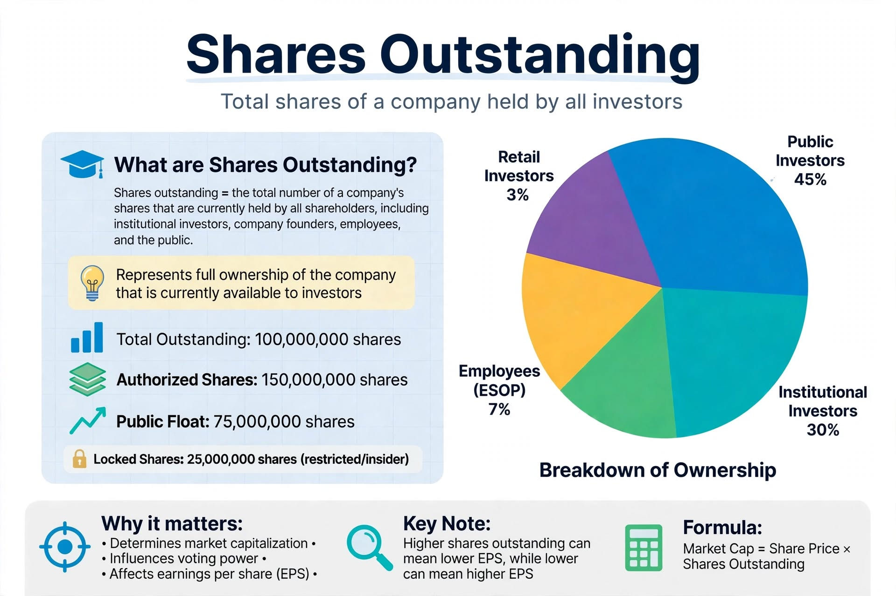
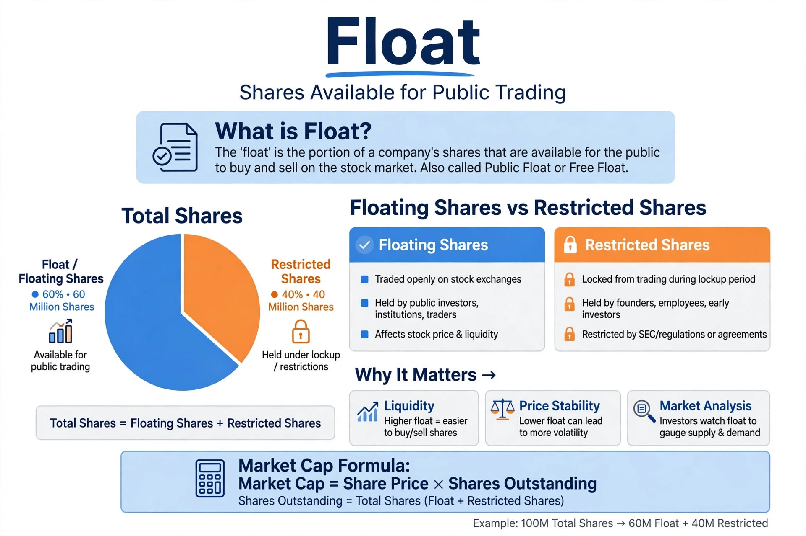
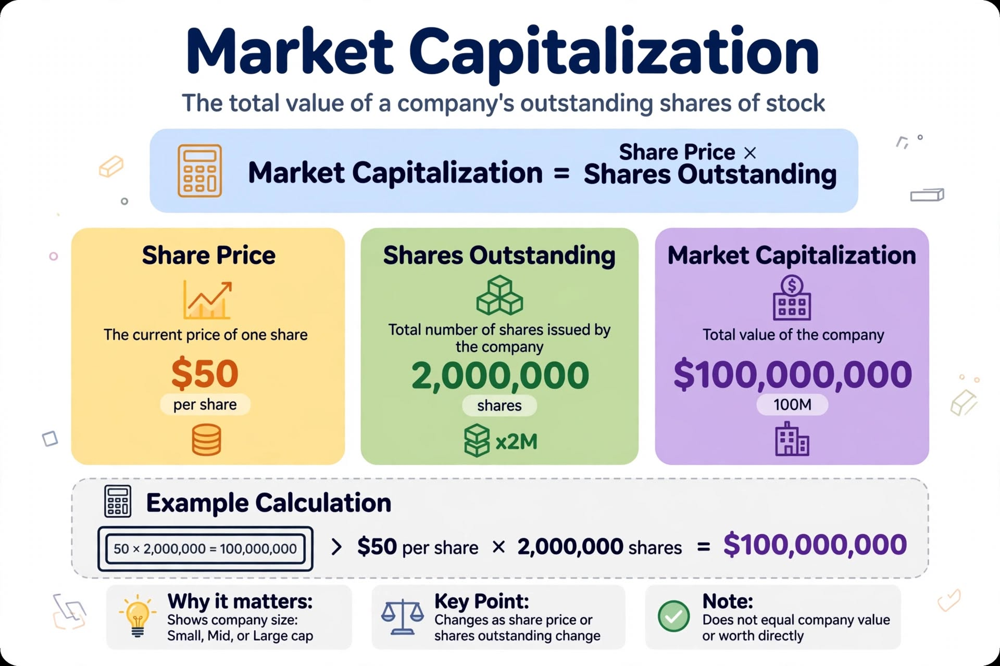
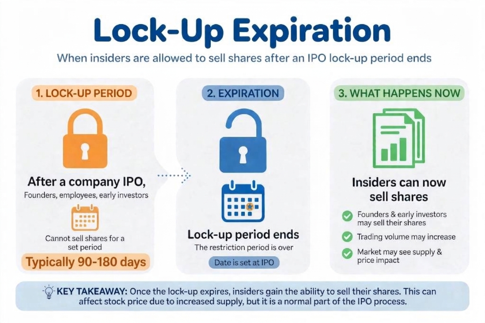
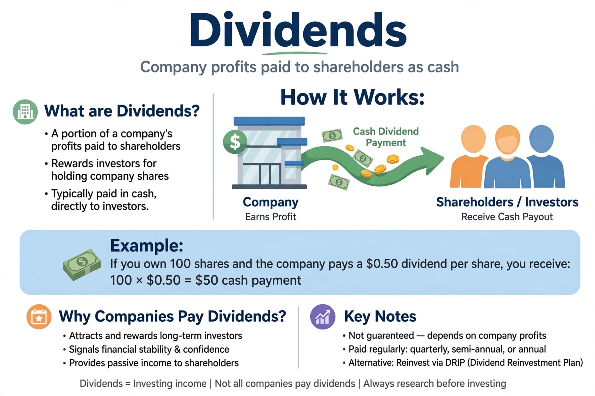
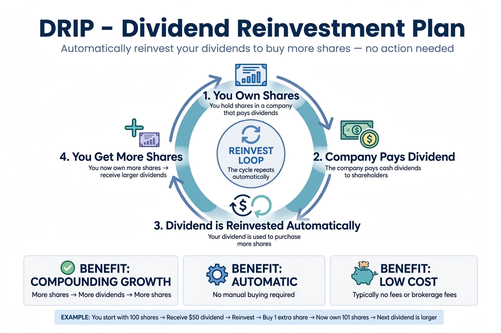
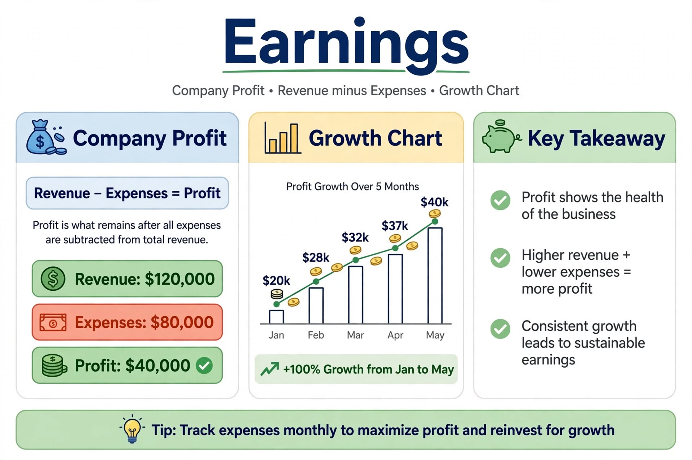
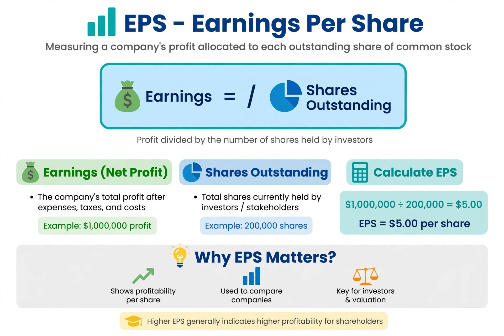
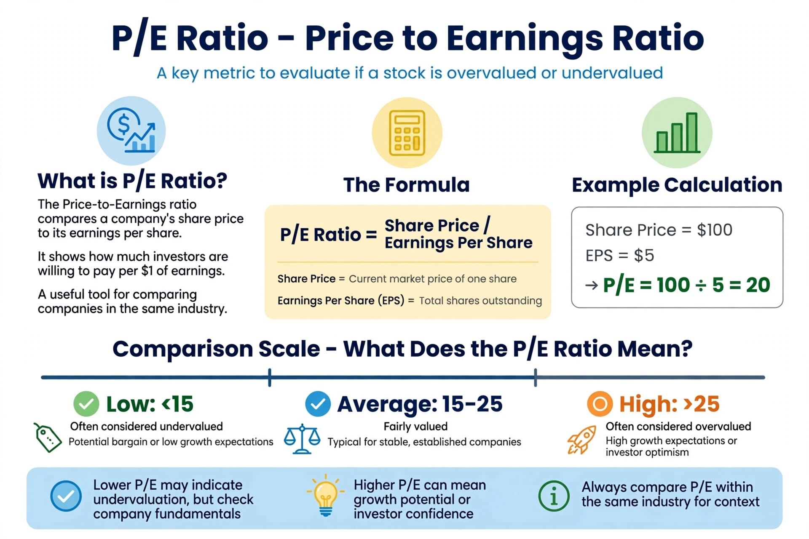
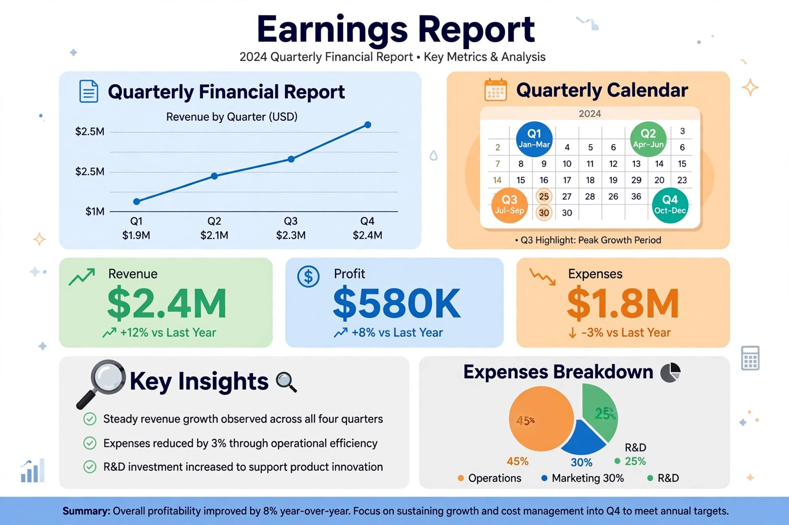

Introduction to Stock Fundamentals
In Lesson 1, we introduced the stock market, securities, stocks, shareholders, exchanges and the difference between traders and investors.
In this lesson, we will go deeper into how stocks are structured and how investors evaluate companies. You will learn terms such as shares outstanding, float, market capitalization, dividends, earnings per share and the price-to-earnings ratio.
Understanding these concepts can help you make more informed decisions when researching a company or studying a stock.
What Are Shares Outstanding?

Shares outstanding refers to the total number of a company's shares that are currently held by its shareholders. These shareholders can include individual investors, institutions, company executives and other insiders.
When a company issues shares, those shares can become part of its outstanding shares. However, shares that the company has bought back and holds in its treasury are generally excluded from the outstanding share count.
Example
Imagine a company has issued 100 million shares. Those shares are currently held by investors, company executives and institutions.
The company later buys back 10 million of its shares and holds them as treasury stock.
| Description | Number of Shares |
|---|---|
| Shares issued and held | 100 million |
| Treasury shares | 10 million |
| Shares outstanding | 90 million |
Key Point
Shares outstanding are the company's issued shares currently held by shareholders. Treasury shares held by the company itself are excluded.
What Is Float?

Float, also called public float, refers to the number of a company's shares that are generally available for public trading.
Not every outstanding share is necessarily available for public trading. Some shares may be restricted or held closely by company insiders, founders or other major shareholders.
Example: Calculating Float
Imagine a company has 80 million shares outstanding. Out of those shares, 15 million are restricted or closely held and are not generally available for public trading.
To estimate the float:
Float Calculation
80 million shares outstanding − 15 million restricted shares = 65 million shares of float.
Why Does Float Matter to Traders?
Float can influence how a stock behaves when buying and selling activity increases.
- Low float: Fewer shares are generally available for public trading.
- High float: More shares are generally available for public trading.
- Trading activity: A sudden increase in demand can have a noticeable effect on a stock with a relatively small float.
Important Note
Low-float stocks can experience sharp price movements and increased volatility. However, a low float does not automatically mean a stock will increase in price.
Key Point
Shares outstanding represent the total shares held by shareholders, while float represents the shares generally available for public trading.
What Is Market Capitalization?

Market capitalization, commonly called market cap, is the total market value of a company's outstanding shares.
It gives investors an idea of the company's size based on its current stock market value.
How Is Market Capitalization Calculated?
Market Capitalization Formula
Market Capitalization = Share Price × Shares Outstanding
Example
Imagine a company has:
- 50 million shares outstanding.
- A current share price of $40.
Multiply the share price by the number of shares outstanding:
Calculation
$40 × 50,000,000 = $2 billion market capitalization.
Common Market Capitalization Categories
Companies are often grouped into different categories according to their market capitalization. The ranges below are approximate conventions and may vary between financial sources.
| Category | Approximate Market Cap |
|---|---|
| Mega-cap | $200 billion and above |
| Large-cap | $10 billion – $200 billion |
| Mid-cap | $2 billion – $10 billion |
| Small-cap | $300 million – $2 billion |
| Micro-cap | Below $300 million |
Important Note
A company's market capitalization is not the same as its revenue, profit or cash balance. It represents the market value of its outstanding shares.
Key Point
Market capitalization helps investors understand the approximate size of a publicly traded company.
What Is a Lock-Up Expiration?

When a company first goes public through an Initial Public Offering (IPO), certain shareholders may agree not to sell their shares for a specified period.
This restriction is known as a lock-up period. It commonly applies to company founders, executives, employees and early investors.
A lock-up expiration is the date when that contractual restriction ends. After that date, the affected shareholders may be permitted to sell their shares, subject to other applicable restrictions and securities laws.
Example
Imagine a company goes public in January. Its insiders and early investors agree not to sell certain shares for 180 days.
When the 180-day lock-up period ends, those shareholders may become eligible to sell the shares covered by the agreement.
Why Do Traders Watch Lock-Up Expiration Dates?
- More shares may become eligible for sale.
- Some shareholders may decide to sell their shares.
- Increased selling activity could put downward pressure on the stock price.
- Traders may watch trading volume and price action around the expiration date.
Important Note
A lock-up expiration does not mean insiders must sell their shares. It simply means the contractual restriction has ended for the shares covered by that agreement. The actual market impact depends on what shareholders decide to do and other market conditions.
Key Point
Traders monitor lock-up expiration dates because additional shares may become available for sale after the restriction ends.
What Are Dividends?

A dividend is a distribution of a company's earnings or other assets to its shareholders. Dividends are commonly paid in cash, although some companies may distribute additional shares instead.
Companies that pay dividends may do so quarterly, semiannually or annually. Some companies do not pay dividends at all.
Example: Calculating a Dividend Payment
Imagine you own 100 shares of a company. The company declares a quarterly dividend of $0.50 per share.
Dividend Calculation
100 shares × $0.50 = $50 dividend payment.
Important Dividend Dates
There are several important dates associated with dividend payments.
| Date | Meaning |
|---|---|
| Declaration Date | The company announces the dividend amount and payment details. |
| Ex-Dividend Date | The date on or after which a new buyer is generally not entitled to the upcoming dividend. |
| Record Date | The company determines which shareholders are eligible to receive the dividend. |
| Payment Date | The dividend is distributed to eligible shareholders. |
Why Do Investors Like Dividends?
- They can provide a source of investment income.
- They can be reinvested to purchase additional shares.
- They may form part of a long-term investment strategy.
Important Note
Dividends are not guaranteed. A company can reduce, suspend or eliminate its dividend. Dividends paid in taxable accounts may also have tax consequences.
Key Point
A dividend is a distribution made to shareholders. Investors should understand the dividend amount and important dates before investing.
What Is DRIP?

DRIP stands for Dividend Reinvestment Plan.
A DRIP allows an investor to use dividend payments to purchase additional shares of the same company instead of receiving the dividend as cash.
Depending on the plan and brokerage, an investor may be able to purchase whole or fractional shares.
Example: How DRIP Works
Imagine you own shares in a company and receive a $20 dividend. The stock is trading at $100 per share.
Instead of receiving the $20 as cash, your dividend is reinvested to purchase more shares.
DRIP Calculation
$20 ÷ $100 = 0.20 additional shares.
You now own an additional 0.20 shares, assuming the plan permits fractional-share purchases at that price.
Potential Benefits of DRIP
- Automatically reinvests dividend payments.
- Can gradually increase the number of shares you own.
- May help support long-term compounding when dividends and investments grow over time.
- Reduces the need to manually place a new purchase order for each dividend payment.
Important Note
Reinvested dividends are generally still taxable in taxable accounts, even when you do not receive the dividend as cash. Reinvesting dividends does not guarantee a profit or protect you from losses.
Key Point
DRIP means using dividend payments to buy additional shares instead of taking the dividend as cash.
What Are Earnings?

In stock market analysis, earnings generally refers to the profit a company generates after accounting for its expenses.
Investors pay attention to earnings because they help show how financially successful a company is and whether its profitability is improving or declining.
Understanding Revenue and Expenses
- Revenue: The money a company brings in from selling goods or providing services before expenses are deducted.
- Expenses: The costs a company incurs while operating its business.
- Net Income: The profit remaining after expenses and other applicable items are accounted for.
Example
Imagine a company generates $10 million in revenue and has $7 million in expenses.
Simplified Earnings Calculation
$10 million revenue − $7 million expenses = $3 million profit.
Why Do Earnings Matter to Investors?
- They help investors evaluate company profitability.
- They can reveal whether a company's business is growing.
- They are used in calculating earnings per share.
- They help investors assess a company's financial performance.
Important Note
Revenue and earnings are not the same thing. A company can generate substantial revenue and still report a loss if its expenses and other costs are too high.
Key Point
Earnings help investors understand how much profit a company generates after accounting for its costs.
What Is Earnings Per Share (EPS)?

Earnings Per Share (EPS) is a financial measurement that shows how much of a company's earnings are attributable to each share of its common stock.
Investors use EPS to evaluate a company's profitability on a per-share basis.
Basic EPS Formula
EPS Calculation
Basic EPS = (Net Income − Preferred Dividends) ÷ Weighted Average Common Shares Outstanding
Example
Imagine a company reports:
- Net income: $10 million.
- Preferred dividends: $0.
- Weighted average common shares outstanding: 5 million.
EPS Calculation
$10 million ÷ 5 million shares = $2 EPS.
This means the company generated $2 in earnings for each weighted average common share during the reporting period.
Basic EPS vs. Diluted EPS
Basic EPS
Uses the weighted average number of common shares actually outstanding during the reporting period.
Diluted EPS
Takes into account potential additional common shares from instruments such as stock options and convertible securities when applicable.
Why Does EPS Matter?
- It helps investors measure profitability per share.
- It can be compared with previous reporting periods.
- It is used when calculating the P/E ratio.
- Investors often compare reported EPS with analyst expectations.
Important Note
EPS alone does not tell you whether a stock is a good investment. Investors should also consider revenue, cash flow, debt, growth and other financial information.
Key Point
EPS measures a company's earnings on a per-share basis. It is one of the important figures investors examine when evaluating a company's performance.
What Is the Price-to-Earnings Ratio (P/E)?

The Price-to-Earnings Ratio, commonly called the P/E ratio, is a valuation measurement that compares a company's stock price with its earnings per share.
It helps investors understand how much the market is willing to pay for each dollar of a company's earnings.
P/E Ratio Formula
P/E Calculation
P/E Ratio = Share Price ÷ Earnings Per Share (EPS)
Example
Imagine a stock is trading at $100 per share and its earnings per share are $5.
P/E Calculation
$100 ÷ $5 = 20.
The company's P/E ratio is 20. This means investors are paying $20 for every $1 of the company's annual earnings per share, using the earnings figure in the calculation.
Understanding High and Low P/E Ratios
Higher P/E Ratio
Investors may be expecting stronger future growth, or the stock may be trading at a higher valuation compared with its current earnings.
Lower P/E Ratio
The stock may have a lower valuation relative to earnings, or investors may have concerns about the company's future prospects.
Why Do Investors Use the P/E Ratio?
- To compare a company's valuation with similar companies.
- To examine how the stock is valued relative to its earnings.
- To help assess whether the market has high or low expectations for a company.
Important Note
A high P/E ratio does not automatically mean a stock is overvalued, and a low P/E ratio does not automatically mean it is undervalued. Investors should consider the company's growth, industry, risks and financial condition.
Key Point
The P/E ratio compares a stock's price with its earnings per share. It is a valuation tool, not a guarantee of future stock performance.
What Is an Earnings Report?

An earnings report is a financial report released by a publicly traded company to provide information about its performance over a particular period.
Public companies generally release quarterly financial results and annual financial reports. Investors, traders and analysts study these reports to understand how the business is performing.
What Can You Find in an Earnings Report?
- Revenue: How much money the company generated from its business activities.
- Net Income: The company's profit or loss after applicable expenses.
- EPS: Earnings attributable to each common share.
- Operating Expenses: Costs associated with running the business.
- Cash Flow: Information about the money moving into and out of the business.
- Guidance: Management's outlook or expectations for future performance.
What Is an Earnings Surprise?
An earnings surprise occurs when a company's reported results differ from what analysts were expecting.
Positive Earnings Surprise
The company reports results that are better than analysts expected. For example, reported EPS is higher than the estimated EPS.
Negative Earnings Surprise
The company reports results that are worse than analysts expected. For example, reported EPS is lower than the estimated EPS.
Why Do Earnings Reports Matter to Traders?
Earnings reports can create significant price movements because they provide new information about a company's financial condition and future outlook.
Traders often pay attention to earnings announcements because the market may react quickly when results are released.
Can a Stock Fall Even When Earnings Increase?
Yes. A company can report higher earnings and still see its stock price decline.
This can happen when:
- Investors expected even stronger results.
- Management provides disappointing future guidance.
- Revenue growth is slowing.
- Expenses or other business risks are increasing.
- The stock price had already risen in anticipation of strong results.
Important Note
Do not assume a stock will rise simply because a company reports higher earnings or beats analyst estimates. The market also considers expectations, guidance and other financial information.
Key Point
Earnings reports help investors understand a company's financial performance. Traders watch them because new information can influence stock prices and volatility.
Lesson 2 Summary
In this lesson, you learned ten important stock market fundamentals. These concepts help investors and traders understand how companies are structured, how they make money and how the market evaluates their performance.
Key Terms to Remember
- Shares Outstanding: The total number of a company's shares currently held by shareholders.
- Float: Shares generally available for public trading.
- Market Capitalization: Share price multiplied by shares outstanding.
- Lock-Up Expiration: The end of a contractual restriction on selling certain shares.
- Dividends: Distributions made by a company to its shareholders.
- DRIP: Dividend Reinvestment Plan.
- Earnings: The profit a company generates after accounting for expenses.
- EPS: Earnings Per Share.
- P/E Ratio: Share price divided by earnings per share.
- Earnings Report: A report detailing a company's financial performance.
Important Formulas
| Calculation | Formula |
|---|---|
| Float | Shares Outstanding − Restricted Shares |
| Market Capitalization | Share Price × Shares Outstanding |
| Dividend Payment | Shares Owned × Dividend Per Share |
| Basic EPS | (Net Income − Preferred Dividends) ÷ Weighted Average Common Shares |
| P/E Ratio | Share Price ÷ EPS |
Before You Move On
Make sure you understand the difference between shares outstanding and float, how to calculate market capitalization, and how EPS and the P/E ratio are used to evaluate stocks.
You should also understand why dividends, lock-up expirations and earnings announcements can matter to traders and investors.
Lesson 2 Examination
Test your understanding of the ten topics covered in this lesson. The examination contains 15 questions, including calculation questions and multiple-choice questions.
Read each question carefully before selecting your answer. You will receive your score and explanations after submitting your answers.